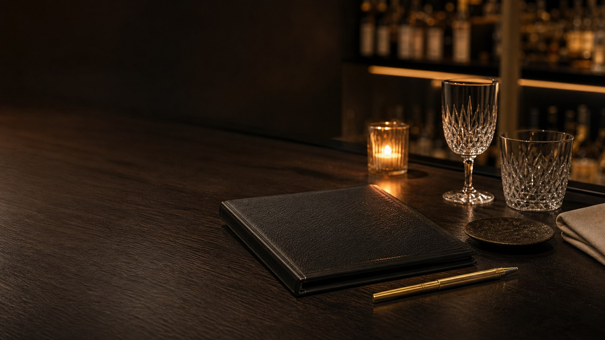

推奨人数
カウンターは1〜2名、半個室は2〜4名を想定。5名以上は貸切相談の見せ方だけを用意しています。

Reservation
このフォームはデモ表示です。送信、予約確定、決済は行われません。
Policy
実店舗ではありませんが、高級バーの予約体験を想定したUIとして、人数、席種、日付の確認導線を配置しています。
20歳未満の飲酒は法律で禁止されています。
Reservation Guide
カウンターは1〜2名、半個室は2〜4名を想定。5名以上は貸切相談の見せ方だけを用意しています。
一組あたり約120分の想定。次の予約と重ならないよう、ゆとりある入れ替えを表現しています。
厳格な指定ではなく、香りの強い整髪料や大きな音の出る機器を控える案内を想定しています。
このページは送信処理を持たないデモです。実予約、通知、個人情報保存、決済は一切行いません。